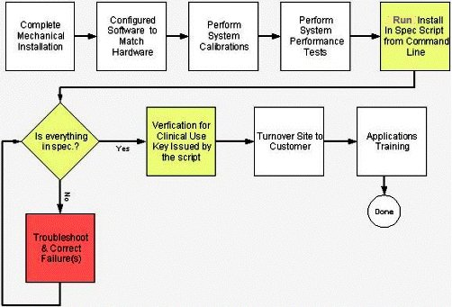
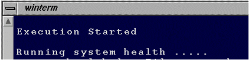
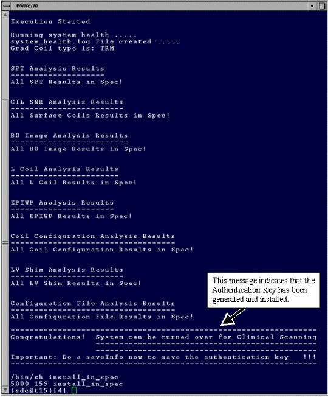
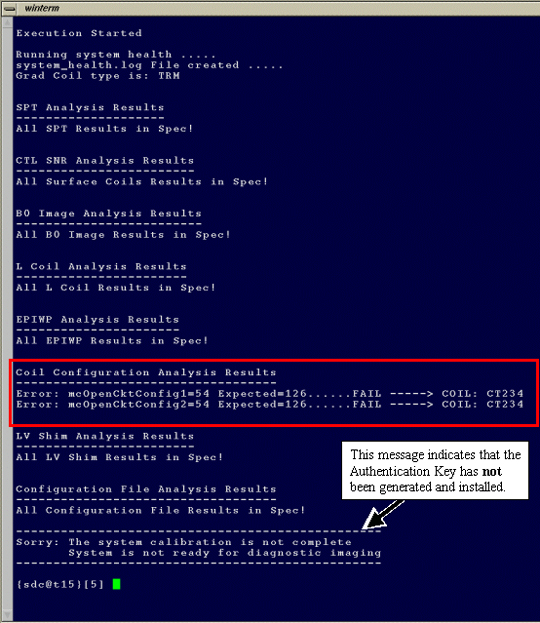

Proprietary to General Electric Company
Direction 5440000, Rev# 5
Signa HDxt Service Methods
Module Version 2.0, Version Date 6/10/08
Proprietary to General Electric Company |
| Required Persons | Preliminary Reqs | Procedure | Finalization |
|---|---|---|---|
| 1 | Not Applicable | 15 mins | Not Applicable |
Follow the process flow shown in Illustration 1 to generate the System In Spec Authentication Key. The key cannot be generated until all system calibrations and test scans have successfully completed. Table 1 shows the various parameters that the Install In Spec process evaluates and the passing criteria for each parameter.
Illustration 1: Phase 2 System in Spec Process

Table 1: Install in Spec Criteria and EPT PM White Pixel Specs
| Test | Subtests | Satisfactory Test Results |
| SPT Quick Head Check | Z-Isocenter | Passing or Marginal |
| Gradcal | Passing or Marginal | |
| SPT | Head and Body SNR | Passing or Marginal |
| Head and Body Stability | Passing or Marginal | |
| EPT | Head and Body White Pixel | Passing* *Passing criteria is defined as follows: |
| ||
| Head and Body B0 Image | Passing (less than 5%) | |
LVshim (See Note 1) | Inhomogeneity of BRM and TRM (Whole Body) | 1.5T: (Passing @ 45 cm DSV @ 200 Hz BW, less than 80 Hz overall homogeneity.)3.0T: (Passing @ 45 cm DSV @ 400 Hz BW, less than 127 Hz overall homogeneity); all coefficients meeting customer acceptance. (This is usually twice the “Shim to Goal” for all magnets.) |
| System Gain | Successful execution of System Gain. | |
| Gradcal | Successful execution of Gradient Calibration. | |
| Isocoenter | Successful execution of Isocenter Calibration. | |
| Driver Control Board Calibration | Successful execution of Driver Control Board Calibration. | |
| BACC | BACC Calibration | Successful execution of Bandpass Asymetry Test. |
| MCR2 Analysis | MCR2 Tool Diagnostics | Passing run of MCR2 Diagnostics. |
| UPM | UPM Calibration File | Passing |
| System Health Information in third quadrant of HOME page on MR Service Desktop browser. | Config File Checks | Passing |
| Coil Config File Checks | ||
| Lcoil Calibration File Checks | ||
| Note: IIS always analyzes the last LVShim file created. Make sure this file was created with the “Shim Type” (Menu selection 1) in LVShim Analysis program set to “Test” Mode. This mode uses the customer acceptance specification values needed for IIS to correctly analyze the LVShim file results. | ||
| NOTE: | The tests listed in the Table 1 do not need to be run together for the Install In Spec evaluation process to pass. For example, if SPT Head SNR fails after it is fixed, run just SPT Head SNR. A partial run of the test that failed previously would only need to be run. In the given example, running SPT Head Quick Check would also be a valid test selection. If EPT failed head spike noise, run just the head spike noise portion of the EPT again. This process can be repeated as many times as necessary until the spec is met, and the Install In Spec executable generates the key. |
Confirm that the software is booted and that the applications software is running.
On the service desktop open a C-shell window.
In the C-shell window, type: cd /usr/local/bin and press <Enter>.
In the C-shell window, type: install_in_spec and press <Enter>.
The System Health will start, and information similar to Illustration 2 displays for about 30 seconds.
Illustration 2: System Health Starting

After about 30 seconds System Health results will be displayed. Illustration 3 is example Install In Spec output data from a system that is passing all of its calibration, configuration and performance checks.
Illustration 3: System Health Successful - Key Generated

Failures, like those shown in Illustration 4, must be corrected and Step 3 through Step 5 repeated until the displayed results indicate that all parameters passed and the key was generated.
Illustration 4: System Health Failed - Key Not Generated

Perform a SaveINFO once Install In Spec indicates the system can be turned over for clinical scanning. (This will save the key to the SaveINFO MOD so that it will not be necessary to generate it again in the future.)
If unable to generate a key, see Troubleshooting Guidelines.
No finalization steps.